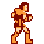
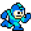

Video Game Randomizer
Find your game


30,000+ games

A database of all video games from 1970 - 2016. Games released in the last decade have additional information including...
- Aggregate review score with data from Metacritic
- Stats on how long it takes to complete a game from HTLB
Filter anything
Specify your filters to get a random game you've never heard of before. Filters include platforms, genre, release year, average time to beat and average rating.
Find that hidden gem
Results for your randomly choosen game come with links to purchase that game; or links to find that game if it is out of print.
Or... use the cover art browser to randomly find something you like!